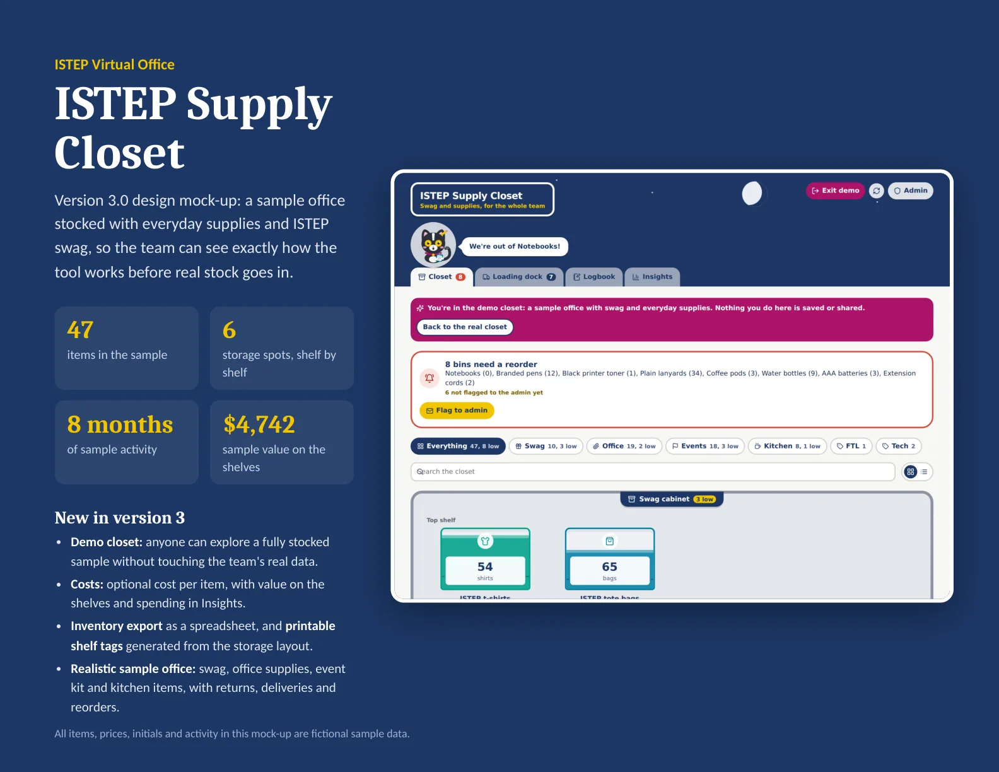
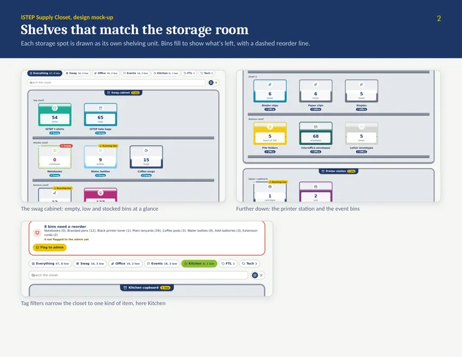
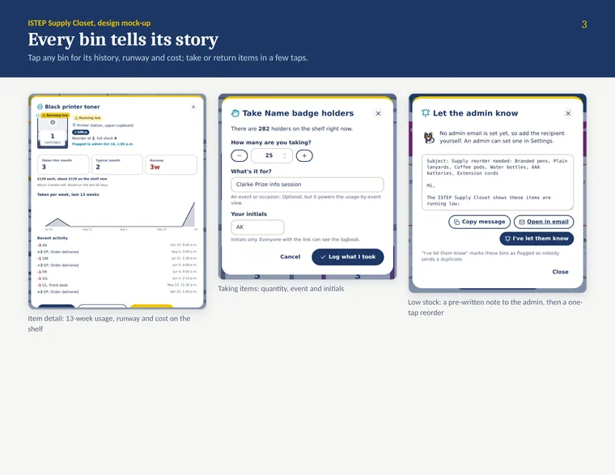
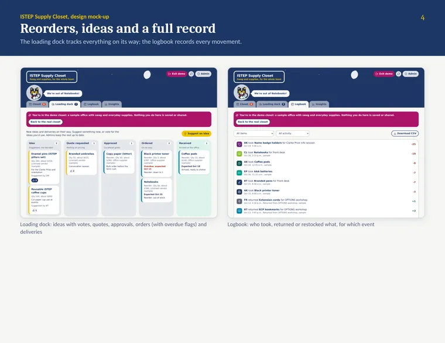
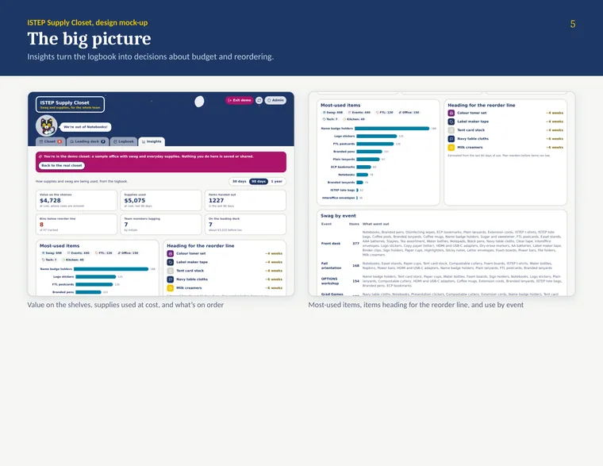
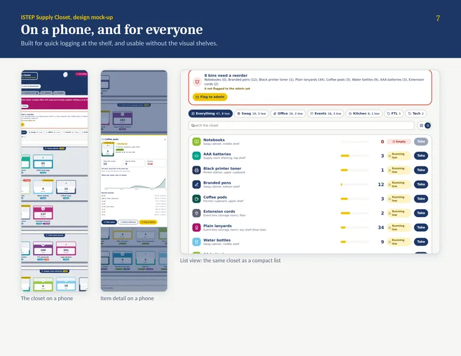

Supply Closet
A React app that tracks ISTEP's swag and supplies.


Result
- 12sections in the draft SOP
- 80shelf labels from one link, at most
- 5purchase stages, from idea to received
The SOP's placeholders need filling in before the closet goes live.
The problem and what I built
Supplies disappear without a record, reorders happen too late, events drain stock, and nobody knows what's on order or what an event used.
A React app running as a Claude artifact with shared storage: a live twin of the shelves, event pick lists, a purchase pipeline, and Tally, a cat whose mood tracks the stock and who drafts reorders.
Full detailsHow it works, the full feature list, decisions, numbers and next steps
Tools
- React
- lucide-react
- Recharts
- Claude artifact storage and API
- Hand-built SVG charts
- An embedded QR encoder
Admin is a convenience switch, not a sign-in.
The problem
Supplies disappear without anyone recording it, reorders happen too late, events drain stock, and nobody knows what's on order or what an event actually used.
What I built
- The main app (about 1,540 lines): Closet, Loading dock, Logbook and Insights tabs. It's a Claude artifact with shared storage.
- A showcase edition (about 770 lines) that opens on a demo closet:
- Storage room: an SVG "live twin" of the real shelves. Bins fill to their stock level, a dashed line marks the reorder point, and the mascot sits at the unit with the most problems.
- Pulse: KPI tiles, 12 weeks of use, "running out next", use by event and a weekday heatmap.
- Event prep: enter a headcount and pick kits to get a pick list with shortages flagged (rules of thumb like two cups and three napkins per guest). One click pulls the stock; another sends shortages to the loading dock.
- Loading dock: a purchase pipeline (Idea, Quote, Approved, Ordered, Received) with votes and overdue flags.
- Ask Tally: a chat drawer that calls Claude with the current stock as context and drafts reorder emails.
- A design mock-up PDF: 9 pages, all data fictional.
- An SOP (draft): 12 sections and a paper fallback log.
- A QR label generator: paste the shared link to get a door poster, up to 80 shelf labels and general labels. It checks that the link will work for teammates.
How it works
- React with lucide-react icons and Recharts, plus hand-built SVG charts, running as a Claude artifact with shared storage so the whole team sees the same closet.
- The reorder formula in the SOP: (typical month ÷ 4) × lead time in weeks, plus the biggest single event pull.
- A keeper rhythm: 5 minutes weekly, 15 monthly, 45 quarterly and 1 hour yearly.
Key decisions
- Tally, the tuxedo cat, whose mood (happy, worried, alarmed) reflects the stock. Earlier drafts called the mascot "Stash".
- Simple rules: "No scan, no swag"; initials only; and licensed suppliers only for U of T-branded items.
- Privacy: initials only, and "keep personal and financial details out of notes".
- A label on the Admin switch: "Admin is a convenience switch, not a sign-in."
- A friendly face with a U of T-inspired palette and the Nunito font.
Results and status
A prototype, pre-launch. The SOP's placeholders still need filling in before the closet goes live.
What I'd do next
- Fill in the SOP's placeholders and launch it with real stock.
- Capture screenshots of the showcase's Storage room, Pulse, Event prep and Ask Tally.
Gallery
Pages from the design mock-up. All items, prices, initials and activity are fictional sample data.

The storage room as an SVG twin of the real shelves. 
Item detail, taking items, and a low-stock note to the admin. 
The loading dock and the logbook. 
Insights: value on the shelves and use by event. 
On a phone, plus a list view that doesn't rely on the visual shelves.